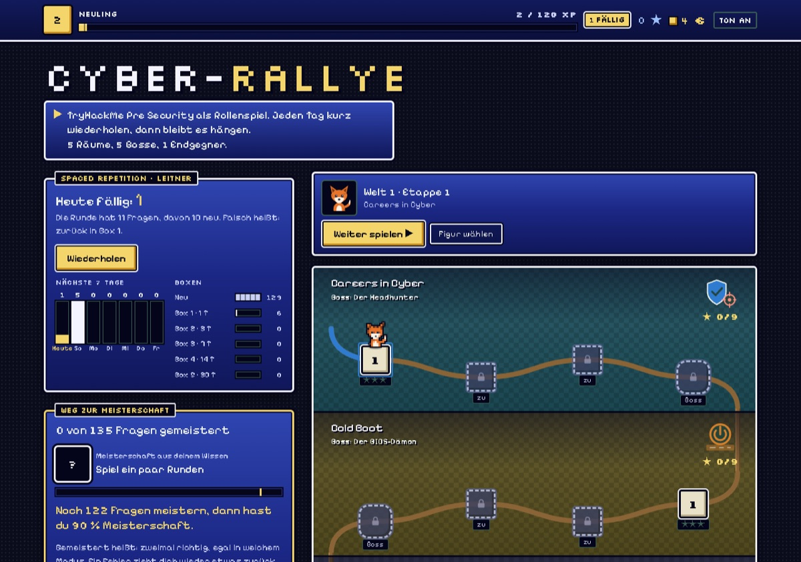

Gelb sind KI-Agents, Cyan ist Security. Rot sind Lernspiele.
3.619 Tests. Automatische Tests für Jarvis, jede Nacht in der Cloud.
Was ich gebaut habe. Jedes Projekt mit einer echten Zahl.
Agent-Board
Eine Live-Ansicht in Pixel-Art für Claude-Code-Agents. Jeder Subagent ist eine kleine Figur, die in den Raum des Werkzeugs geht, das sie gerade benutzt. So sieht man auf einen Blick, wer arbeitet und wer auf eine Freigabe wartet.
Mein Sprachassistent für Mac und Windows: Taste drücken oder „Hey Jarvis“ sagen, er erledigt Aufgaben mit seinen Werkzeugen und antwortet mit Stimme. Daten verschlüsselt, Schlüssel im macOS-Schlüsselbund, jede Nacht ein Testlauf in der Cloud.
KI-Agent · 3.619 automatische TestsKein öffentlicher Code, weil persönliche Daten im Spiel sind.6
Security
6 Räume im Lernpfad Pre Security auf TryHackMe, dazu der Cisco-Kurs Introduction to Cybersecurity. Mein iPhone hab ich mit dem Mobile Verification Toolkit von Amnesty International gegen 6.630 öffentliche Spyware-Indikatoren abgeglichen: keine gefunden, aber das ist kein Beweis.
Security · TryHackMe-Räume abgeschlossen · läuft geradeEin Zertifikat habe ich noch nicht.408
Rallye-Engine
Ein Lernspiel im Pixel-Look mit Weltkarte, Bossen, Shop und Probetest. Einmal gebaut, zwei Spiele daraus: die GWB-Rallye mit 273 Fragen und die Cyber-Rallye mit 135 Fragen und Wiederholung nach dem Leitner-System.
Lernspiel · 408 Fragen in zwei Spielen · noch nicht öffentlich

11
Claude-Code-Werkzeuge
Ein Wächter prüft jeden Commit und Push mit 11 Mustern, bevor er passiert, dazu ein Cockpit für offene Pull Requests und Skills für wiederkehrende Abläufe.
KI-Agent · 2 Mods, 2 SkillsNoch nicht veröffentlicht.
So baue ich. Jedes Projekt geht durch dieselben Schichten. Was eine Schicht nicht schafft, kommt nicht weiter.
Plan
Ich schreibe auf, was gebaut wird, und teile es in Phasen.
Agents
Claude-Code-Agents bauen parallel an getrennten Teilen, nachts arbeiten Cloud-Routinen weiter. Ich prüfe und führe zusammen.
Tests
Jede Änderung läuft durch die Tests, bevor sie bleibt.
Security
Keine Schlüssel im Code, keine privaten Daten. Vor dem Veröffentlichen prüfe ich, welche Angriffswege es gibt.
Release
Öffentlich wird nur, was fertig ist: mit Anleitung, Lizenz und Demo.
Kontakt.
Für Fragen zu meinen Projekten, Feedback oder Zusammenarbeit: am schnellsten über GitHub.